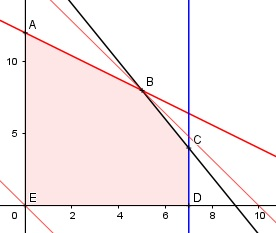

Aufgabe 95 2 Bauteile A und B werden an 2 Maschinen bearbeitet und auf 2 Bahnen zusammengesetzt. Pro Tag können auf der Maschine 1 höchstens 15 Bauteile A oder 12 Bauteile B oder eine Kombination aus beiden bearbeitet werden, auf der Maschine 2 höchstens 9 Bauteile A oder 18 Bauteile B oder eine Kombination aus beiden. Auf der Bahn1 können höchstens 7 auf Bahn 2 höchstens 20 Bauteile pro Tag zusammengesetzt werden. Wieviel Bauteile A und B sind pro Tag herzustellen, wenn das Bauteil A einen Gewinn von 40 €, Bauteil B einen von 25 € erzielt und der Gewinn G maximal sein soll? Bedingungen: x = Anzahl Bauteil A y = Anzahl Bauteil B Kombinationen bzw. Bedingungen: 4x + 5y ≤ 60 6x + 3y ≤ 54 x ≤ 7 y ≤ 20 x ≥ 0 x ∈ ℕ y ≥ 0 y ∈ ℕ Zielfunktion: G = 40x + 25y Randgerade 1: 4x + 5y = 60 Randgerade 2: 6x + 2y = 54 Randgerade 3: x = 7 Randgerade 4: y = 20

Die Eckpunkte A, B, C, D und E bilden das Planungsgebiet, das alle Ungleichungen erfüllt. Eckpunkt B ist der Schnittpunkt der Randgeraden 1 und 2: 4x + 5y = 60 (1) 6x + 3y = 54 (2) (1) * (-3) + (2) * (2) -12x - 15y = -180 12x + 6y = 108 ------------------ -9y = -72 |:(-9) y = 8 Eingesetzt in (1): 4x + 5 * 8 = 60 |- 40 4x = 20 |:4 x = 5 C(5|8) Die Parallele zur Zielfunktion G durch C liegt am höchsten --> Es müssen 5 Bauteile A und 8 Bauteile B gefertigt werden, dann ist der Gewinn G maximal. Gmax = 40 * 5 + 25 * 8 = 400 €